| 日付 | 2026年10月10日（土） - 2026年10月12日（月） | ||||||
|---|---|---|---|---|---|---|---|
| 山域 | 両白山地 | ||||||
| メンバー | 家族（妻） | ||||||
| 山行形態 | 前夜泊2泊3日車中泊 | ||||||
| アクセス | 車 | ||||||
| ルート (Map3) |
|
3日目
昨夜は道の駅白川郷で車中泊。
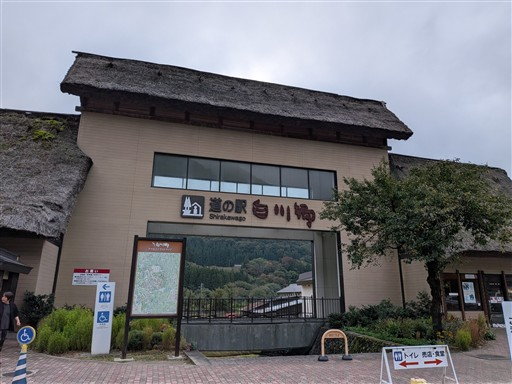
道の駅にあるイラストマップ。一大観光地の白川郷だが
地図を見るとどうやってアクセスしていたんだと思うほど、
どうしようもないほどの山奥にある。
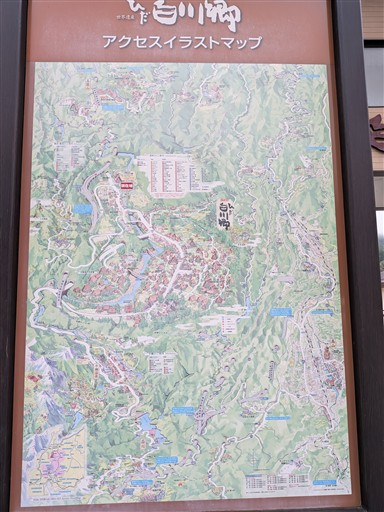
第二駐車場は広々。本日は三方岩岳に登る予定。
どんよりとした空模様だが、雲の上に突き抜けるだろうか？
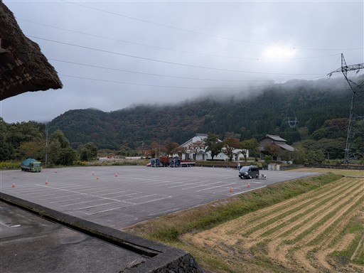
登山口は白山白川郷ホワイトロード内。オープンは7時なので30分前に並んで朝食タイム。
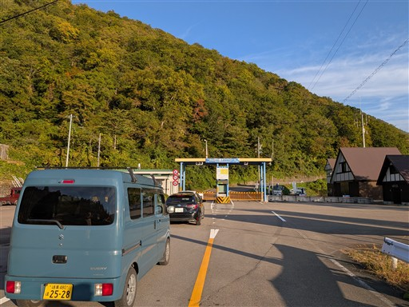
山頂や登山口に着く前の料金所ゲートですでに雲の上。
日の光を浴びた雲海が美しい。
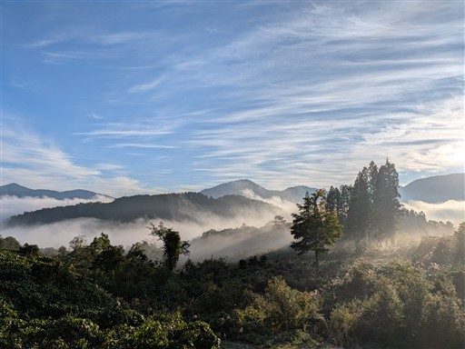
山を見上げる。あれはどの辺りなのだろう？
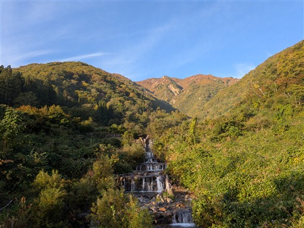
道がオープンしたら車を走らせる。あまりにも景色が良いので、ついつい停まってしまう。
昨日も雲海は見たが、やはり間近で見る雲海には圧倒される。
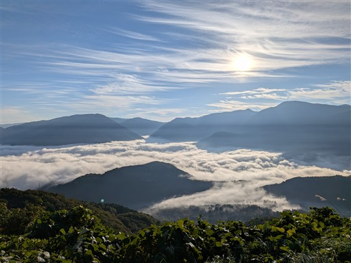
三方岩岳の駐車場に到着。標高1450m。
駐車場がすでに紅葉の名所だ。
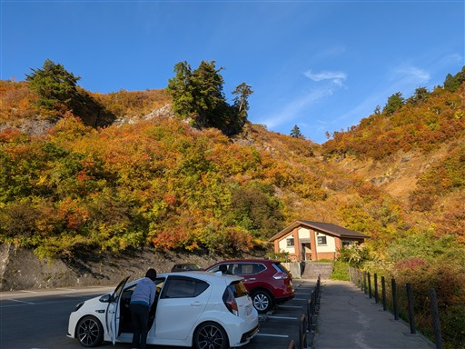
すぐ側が登山口。準備を整えて出発。
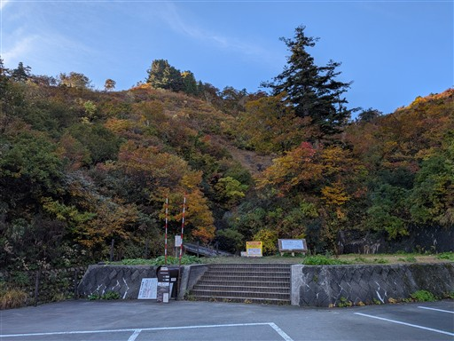
かなり整備された登山道。しかしその後すぐに普通の登山道になる。
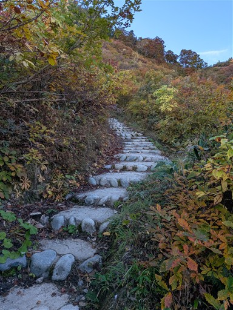
紅葉に包まれた駐車場を見下ろす。まだ車は少ない。
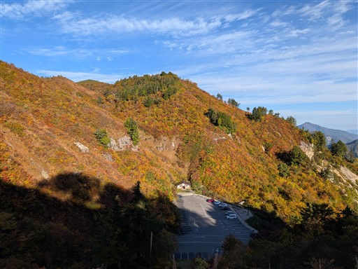
この山は紅葉が美しいことで有名。
昨日の白山で十分に紅葉を堪能したが、本日も楽しみながら登る。
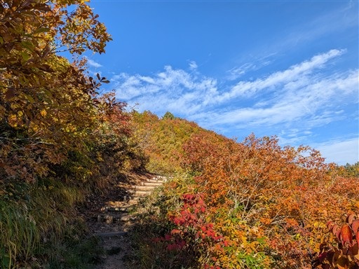
雲海からはだいぶ遠く離れてしまった。
山間部の町が全て雲で蓋をされているのがよく見える。
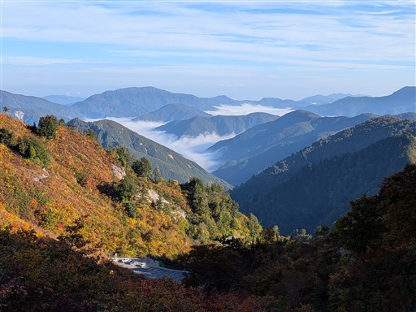
一部、木道が整備されている。
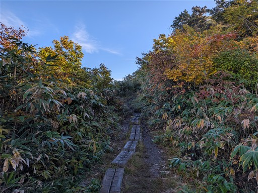
三方岩岳山頂部の岩壁が少しだけ見える。
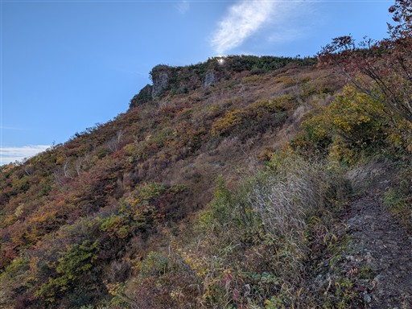
展望台に到着。
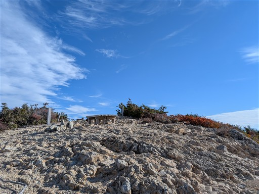
ここは崖の上。真下の紅葉を見下ろす。
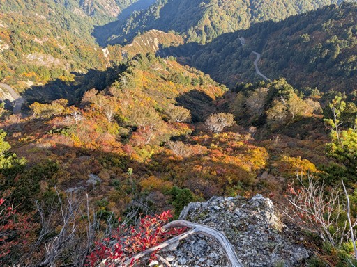
本日も白山が見えた。昨日はあの山頂にいた。
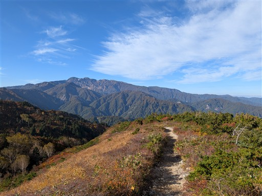
笈ヶ岳、大笠山、大門山と続く稜線。いつか辿りたい未踏の稜線だ。
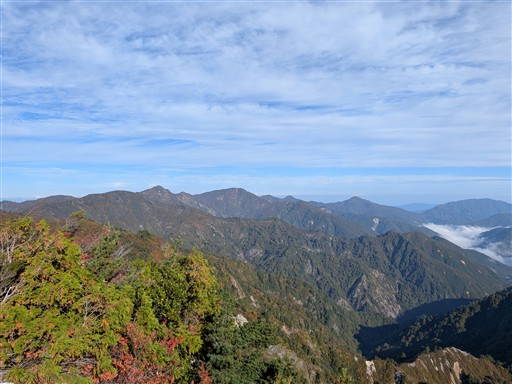
眼下に広がる紅葉。
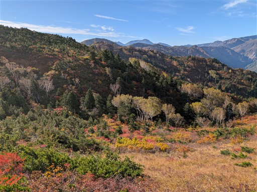
ここから山頂まではすぐ。
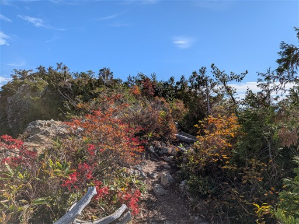
名前の通り三方が岩なのだろう。ダイナミックな地形だ。
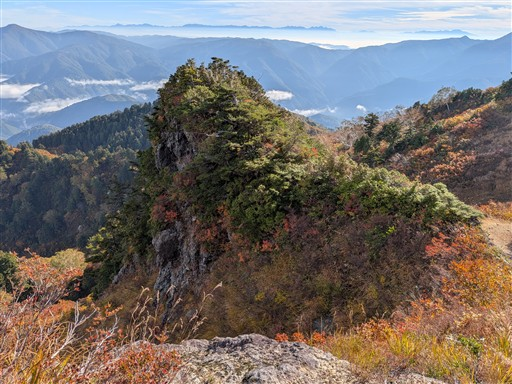
本日も北アルプスがきれいに見えている。3日連続アルプスを眺める。
雲海は消えかかって残骸のみが残っている。
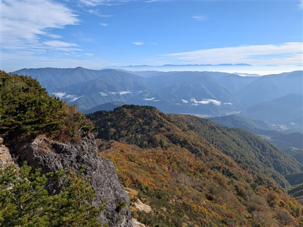
紅葉と白山。
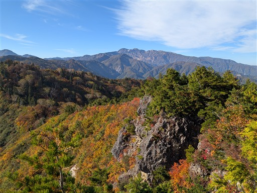
三方岩岳に到着。標高1736m。
山頂がとても狭く、山頂標識が反対側を向いているので、
最初は知らずに通り過ぎてしまった。
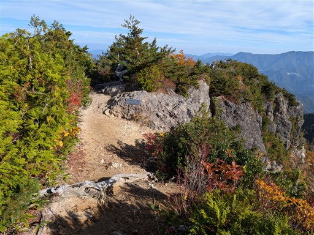
この山からは山頂部の岩壁がよく見える。
登山道は穏やかだが、山は荒々しい。
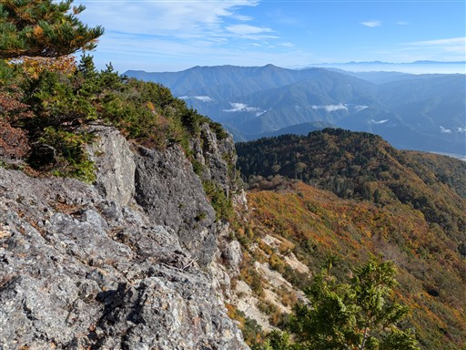
眼下に広がる紅葉。
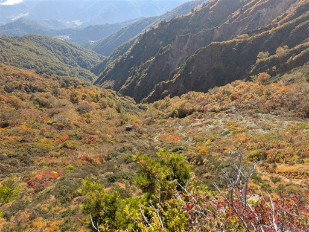
野谷荘司山に続く稜線。今からここを往復する予定だ。
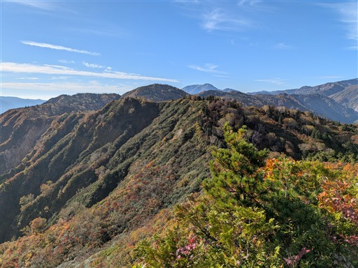
登山道のところどころにある釘。かつては木段を固定していたのだと思われるが、
木段が朽ち果て、今ではただの障害物になっている。
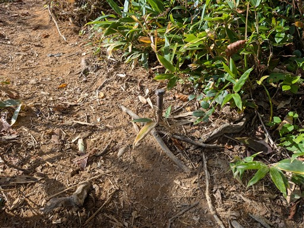
振り返ると三方岩岳が見渡せる。
ここから見る姿が一番この山らしい姿だ。
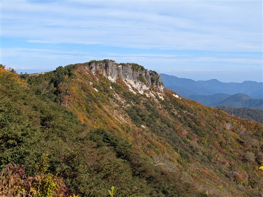
ヒカゲノカズラの茎が伸びている。
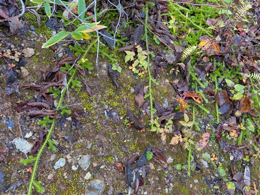
紅葉の尾根道が続く。
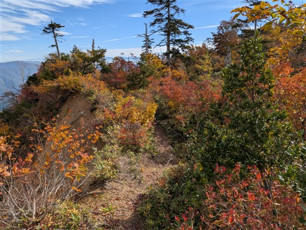
馬狩荘司山を通過。
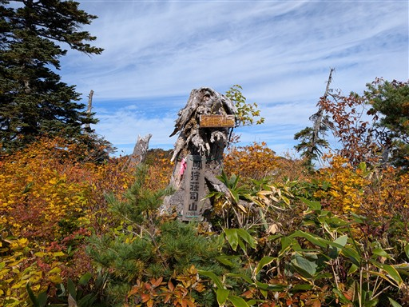
倒木に生える鮮やかな紅葉。
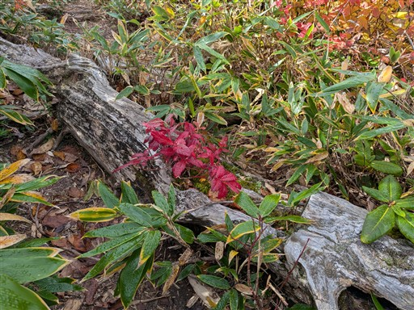
三方岩岳がだいぶ遠くなった。
本日はあまり歩かないルートなのだが、意外に距離は結構ある。
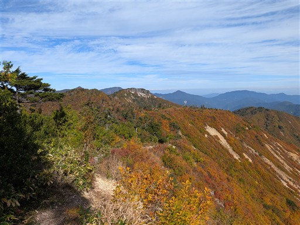
この辺りは傾斜が緩く、展望を満喫しながら歩ける。
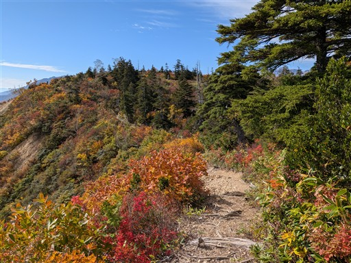
大きく斜面が崩落している。
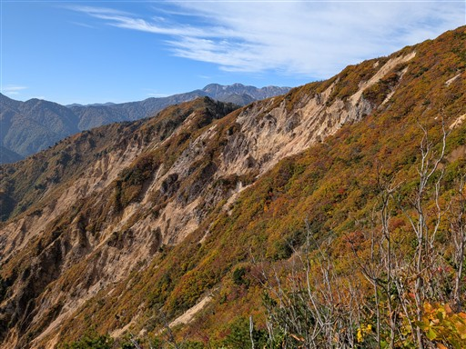
野谷荘司山への最後の登り。
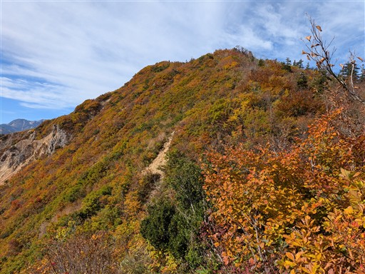
野谷荘司山に到着する。標高1797ｍ。
山頂標識は貧弱だ。
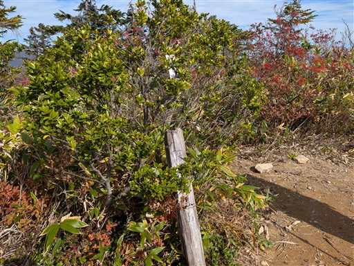
もちろん山頂からの展望は素晴らしい。
白山に向かって登山道が伸びている。
この道を行けばいつか白山に辿り着く。
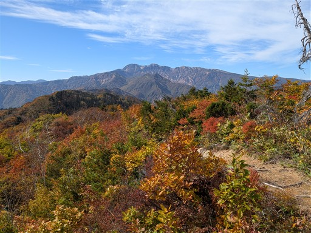
眼下にダム湖、そこから聳える猿ヶ馬場山、奥には御嶽山の頭が見えている。
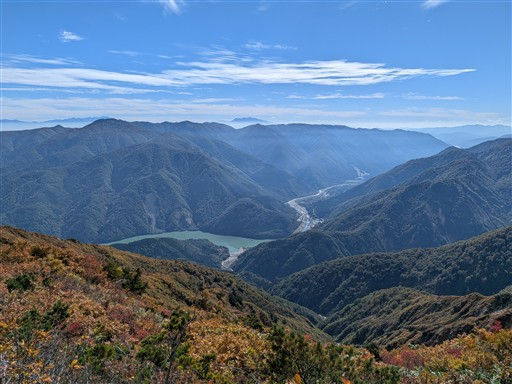
北アルプス方面。
山頂にいた人と少し立ち話。下から登ってきたそうだ。
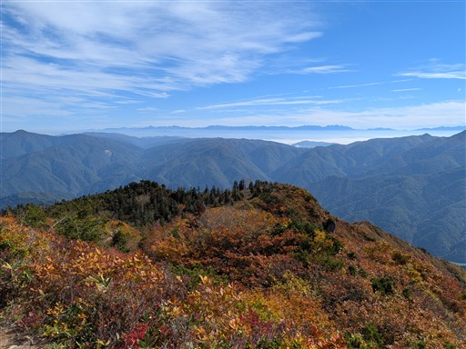
昼食を取ったら下山開始。眼下に白川郷が見える。
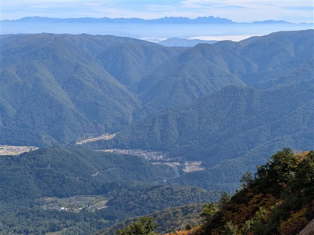
紅葉の道を戻っていく。
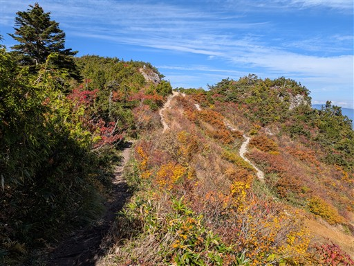
乗鞍岳から一瞬、噴煙が上がっているのかと思ったが、ただの雲のようだ。
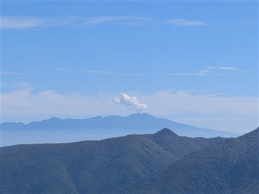
展望台に戻ってくる。この紅葉の前では白山も引き立て役だ。
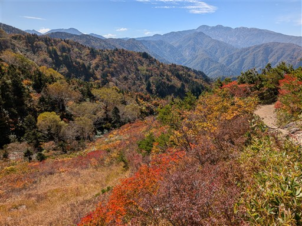
本日は午後から曇り予報。日本海から雲が迫ってきている。
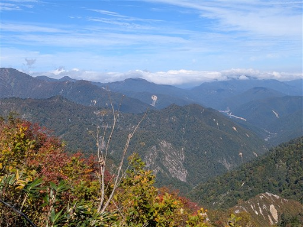
鮮やかな斜面。まさに全山紅葉だ。
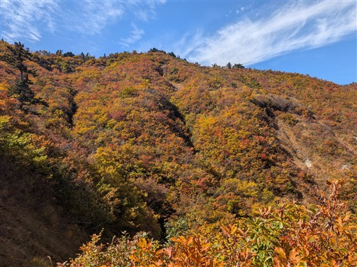
駐車場に戻ってくる。この時間の駐車場は大混雑。
それでも展望目的の人もいて、そこそこ回転しているようだ。
三方岩岳～野谷荘司山は評判通りの紅葉の美しい山だった。
岩がちな山なのにあまり岩っぽさは感じなかったが、
昨日に引き続きの素晴らしい紅葉を堪能できた。
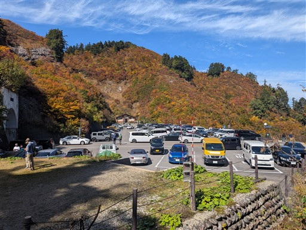
ここからはホワイトロードを通っての観光タイム。
まずは国見展望台へ。
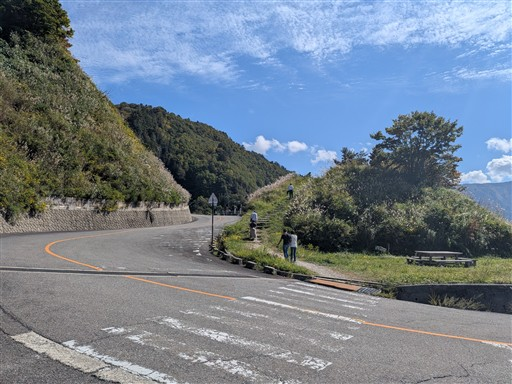
すさまじく深い谷が見渡せる。
しかし柵があって近づけず、谷底は残念ながら全く見えない。
もう少し柵の位置を考慮してほしいところだ。
続いて、ふくべ大滝。落差86mの大きな滝だ。
滝の全貌。流れのすぐ側まで車道が来ている。
巨大な岩が2つあるが、上から落ちてきたのだろうか？恐ろしい。
道路が開設されるまでは地元民ですら見ることがなかったそうだが、
こんな山奥ならそりゃそうだろう。
この辺りの谷も深くて迫力ある景色が広がる。
続いて姥ヶ滝に行こうとしたが、通行止のようだ。
行った人に話を聞くと、河原までは下りられるそうだが、
滝も見れないのにこの階段を下る気も起きず、ここは諦めることにする。
これで観光はお終い。東名経由で帰宅する。
今回の2泊3日の山旅は本当に快晴に恵まれた。
日本全国晴れで、多くの人が最高の展望を満喫したことだろう。
山での宿泊登山はできなかったが、本当に充実した山行だった。